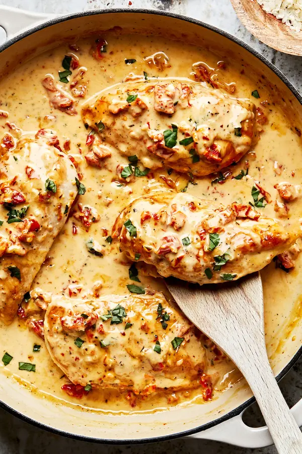

This is a superb family meal, tastes great with potatoes, pasta or even a salad.
How to cook this incredible dish
Ingredients Required
Coat the chicken breasts in the flour.
In a large, deep frying pan, heat the oil over a medium heat.
When it's hot, carefully add the chicken breasts. Cook for 5 minutes. Flip and cook for a further 5 minutes.
Remove the chicken breasts to a plate, turn the heat under the pan to low and add the garlic, sun-dried tomatoes,
oregano and paprika. Stir for 3-5 minutes until the garlic is softened.
Add the cream, stock, parmesan and plenty of salt and pepper and give everything a good stir.
Sit the chicken back in the sauce. Put the lid on the pan and cook for 5 minutes.
Turn the chicken and cook for another 5 minutes.
Check the chicken is cooked through. Remove the pan from the heat, sprinkle over the basil leaves and the squeeze of half a lemon.